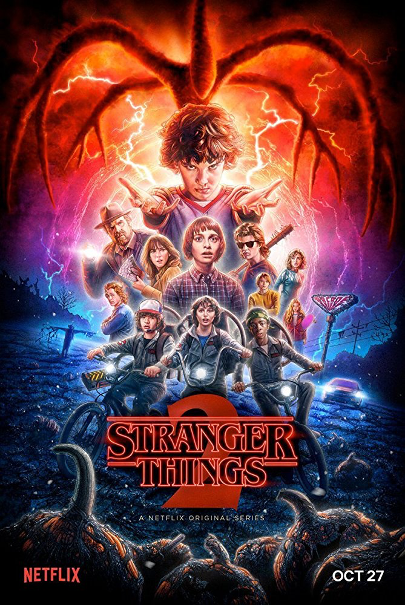
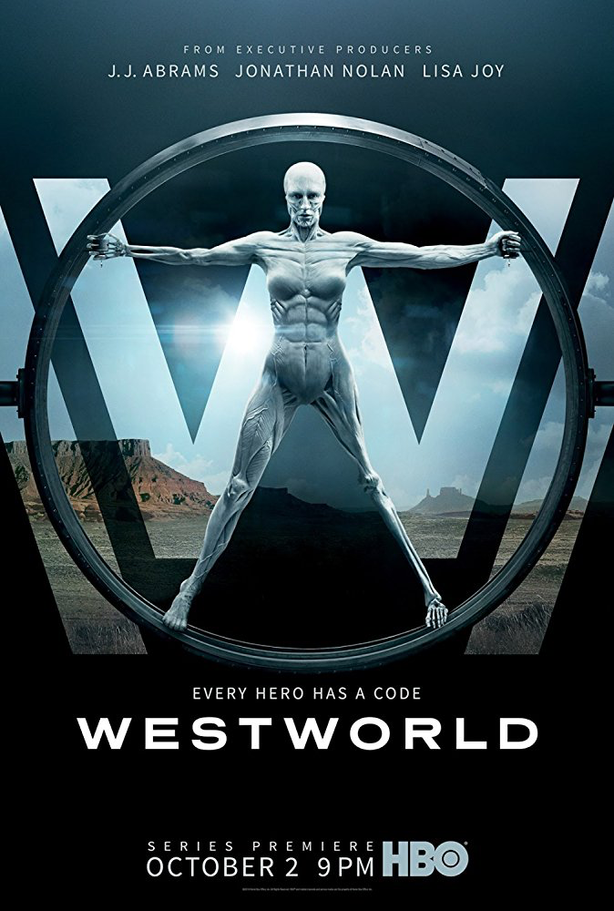
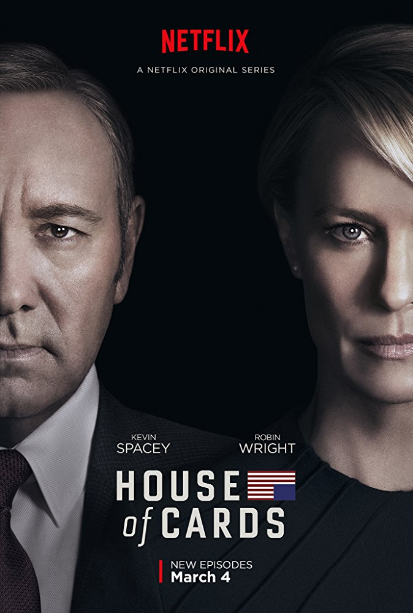

Track your shows automatically
With ShowTrackr you can track your favorite TV shows automatically, so you never loose track of your TV shows ever again
Compatible with

Features
Built and customized for your habits
ShowTrackr’s built-in machine learning and context-aware features guarantee that all the notifications and recommendations are always delivered to you in the perfect moment.
Automated tracking
Track your favorite shows automatically without switching between apps.
Learn moreMachine learning
Get recommendations like never before, which are truly customized for your taste.
Learn moreSmart notifications
Receive smart notifications exactly at the right moments when you need them.
Learn more- 
- 
- 
Easy-to-use interfaces on every
Since most of our features work in a completely automated way, you will mainly use our apps to discover new TV shows recommended for you and discuss the most interesting episodes with like-minded people.
Community
We believe in the power of community
Our goal is to create a product and service that you’re satisfied with and use it every day. This is why we’re constantly working on our services to make it better every day and really listen to what our users has to say.
-
Patrick Martin

ShowTrackr is a real gem! I started using it a couple months ago and it completely changed the way how I watch TV shows. I can only recommend it!
Jan 18, 2018
-
Bruce Murphy
ShowTrackr is a real gem! I started using it a couple months ago and it completely changed the way how I watch TV shows.
Jan 18, 2018
-
Crystal Perkins
ShowTrackr. I can only recommend it!
Jan 18, 2018
-
gregory Wallace
ShowTrackr is a real gem! I started using it a couple months ago and it completely changed the way how I watch TV shows. I can only recommend it!
Jan 18, 2018
-
Megan Walters
ShowTrackr is a real gem! I started using it a couple months ago and it completely changed the way how I watch TV shows. I can only recommend it!
Jan 18, 2018
-
Thomas Cruz
Now I just watch TV shows using ShowTrackr. I can only recommend it!
Jan 18, 2018
-
Andrew Cook
ShowTrackr is a real gem! I started using it a couple months ago and it completely changed the way how I watch TV shows. I can only recommend it!
Jan 18, 2018
-
Joseph Mathews
ShowTrackr is a real gem! I started using it a couple months ago and it completely changed the way how I watch TV shows. I can only recommend it!
Jan 18, 2018
-
Patrick Martin
ShowTrackr is a real gem! I started using it a couple months ago and it completely changed the way how I watch TV shows. I can only recommend it!
Jan 18, 2018
Get Started
Start tracking your TV shows for free
In order to start tracking your TV shows, all you have to do is enter your email address. Everything else will be taken care of by us. All you have to do is sit back, relax and enjoy your TV shows.